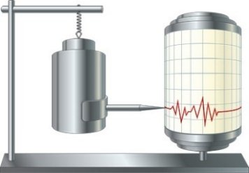

Trong máy đo địa chấn có một con lắc gắn với bút ghi. Khi có địa chấn dưới lòng đất, con lắc bị dao động cưỡng bức tác động lên bút ghi. Bút ghi vẽ dao động thu được lên một băng giấy có thể quay quanh một trục cố định.

Trong một lần đo địa chấn ở giai đoạn ổn định, quan sát viên đo được thời gian bút ghi ghi được một dao động toàn phần là 0,03 giây. Tính tần số của dao động dưới lòng đất lúc đó? (Kết quả làm tròn đến chữ số ở phần thập phân và tính theo đơn vị Hz).